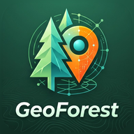

Tačke i fotografije su samo na ovom uređaju (rade bez interneta). KMZ sa fotografijama otvaraju Google Earth, QGIS i ova aplikacija.
Odjeli, odsjeci, putevi i tačke iz .kml / .kmz / .shp
Linija, ispuna i natpisi za svaki KML sloj — i za one preuzete sa servera.
Protomaps ključ podešava se u Postavkama.
Karta nagiba po rasponima i mjerenje nagiba poligona linijama niz padinu.
DEM prikaz; pregledane visinske pločice dostupne su i offline. Nagib do 5 % je ravan teren — bez ekspozicije i bez boje.

Jednim dodirom postavlja izgled koordinata i dugmadi na karti (tema, providnost, veličina, debljina ikona). Poslije možeš sve fino podesiti u „Koordinate i dugmad”.
Izgled zoom dugmadi, lokacije, mjerenja, tragova i izbora karte. Pregled je tačan prikaz; finu providnost, veličinu i oblik možeš dalje mijenjati u „Koordinate i dugmad”.
Za svaki sloj izaberi do koje razmjere se vidi. Kad zumiraš dalje od toga, sloj se sakrije; kad se vratiš bliže, opet se pojavi. Veći broj iza „1:” = dalji pogled (npr. 1:100 000 je cijela općina, 1:5 000 je jedan odsjek).
Kopija (.json) sadrži tragove, mjerenja, KML slojeve, primku, sjekačke linije, inventuru, tačke, mjerenja nagiba i postavke — ne dijeli je. Offline karte (.mbtiles) nisu u kopiji; to su već fajlovi na telefonu. Korisno pri prelasku na novi telefon.
Omogućava Protomaps online podlogu u izboru karata.
Uređaj ID (Firebase) — pošalji administratoru ako zatraži podršku.
nema interneta / Firebase nije podešenOdjel/odsjek biraš dodirom na karti (sloj „Granice taksacije”). Dok je projekat aktivan, svaki označeni dio pripada njemu. Bez aktivnog odjela dio se veže uz odjel ispod njega ili ide u „Bez odjela”.
Ili iz sačuvane površine (📏 Mjerenja) ili učitanog KML poligona.
Velike rasterske karte za rad bez signala. Ostaju na uređaju; aktivna se sama vraća pri pokretanju.
Granice odjela, putevi, tačke… Poligoni se mogu dodirnuti za izvještaj odjela i nagib.
Za SHP označi zajedno istoimene .shp, .dbf i .prj (.prj treba za lokalnu projekciju).
Boje po rasponima preko cijele karte
Granica se unosi u procentima (100 % = 45°); stepeni se računaju sami. Isključi raspon da se ne boji na karti — npr. ostavi samo 30–50 % (17–27°).
Linije od vrha do podnožja padine, nagib svake linije i prosjek poligona. Linije se mogu pomjerati, a mjerenje sačuvati.